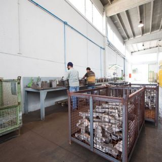
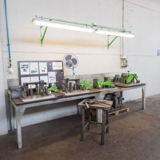
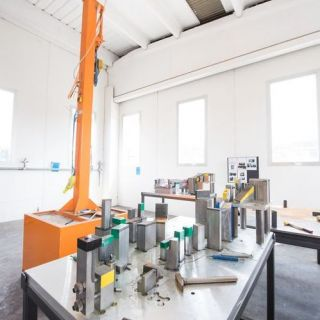

Lavorazioni
Raddrizzatura
Dal 2012 TEMPRALL è specializzata nella raddrizzatura di telai per il settore automotive.
Automotive
Correzione dimensionale per telai e componenti
Raddrizziamo telai per importanti case automobilistiche, utilizzando maschere fornite dal cliente oppure realizzate internamente nella nostra officina.
Le lavorazioni possono essere eseguite manualmente oppure con macchine sofisticate di ultima generazione, in base alle caratteristiche del pezzo.
Metodo
Dal controllo iniziale alla correzione del pezzo
Ogni intervento viene valutato in base a geometria, deformazione e requisiti dimensionali richiesti.
Verifica delle condizioni e delle tolleranze richieste.
Uso di attrezzature cliente o realizzate internamente.
Intervento manuale o con macchine specifiche.
Verifica dimensionale finale del componente.
Reparto
Spazi e attrezzature per la raddrizzatura


